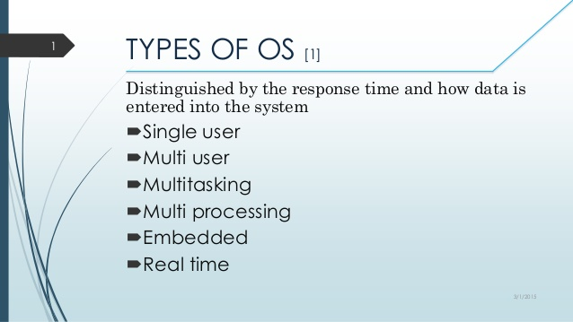

Operating systems are divided into two main sections according to their permitting to carry out more than one operation at one time, or to carry out only one process at a specific time, and the operating system sections are: Multitasking and multi-user systems: are systems that allow the implementation of more than one process at the same time , And allow more than one user to use the software and applications on the computer. Single-task and single-user systems: are systems that do not allow more than one operation to be performed at one time, and do not allow more than one user to use different applications on a computer.
